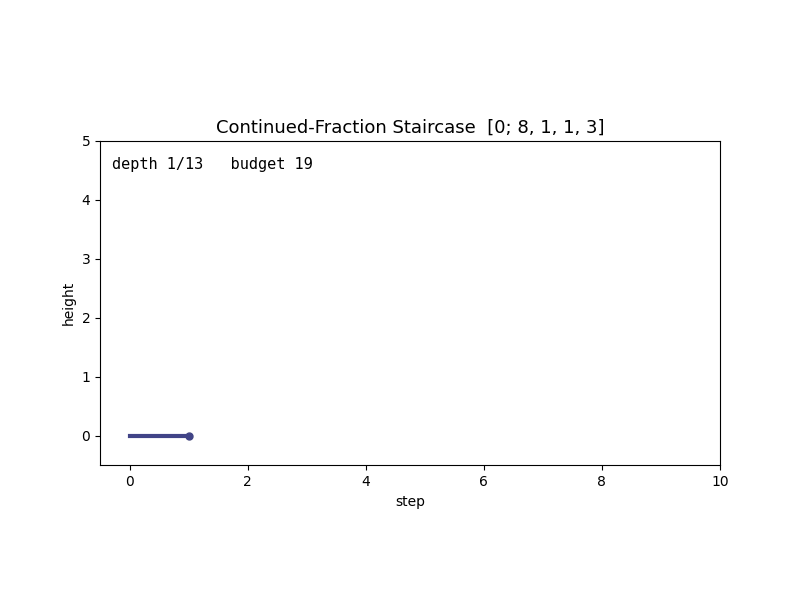
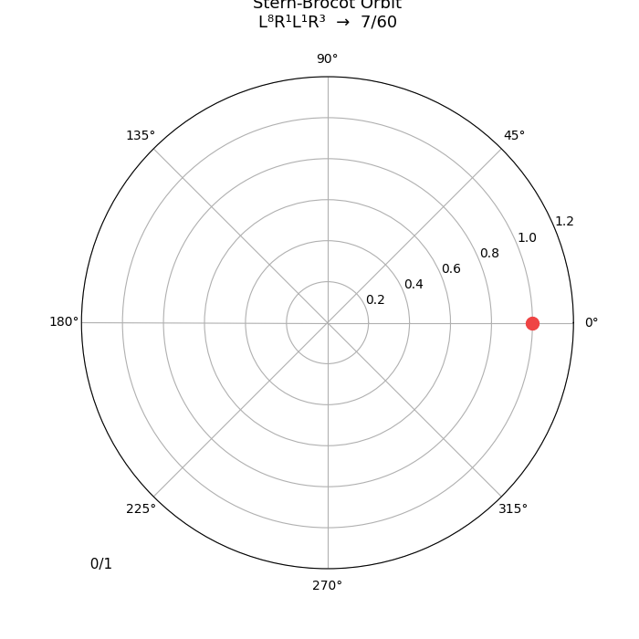
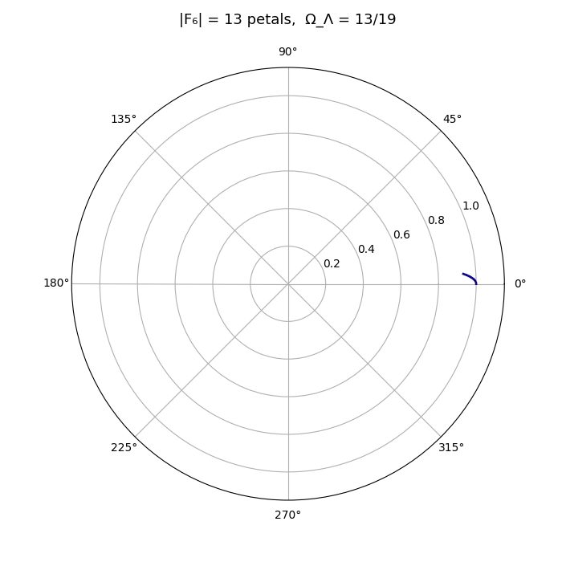
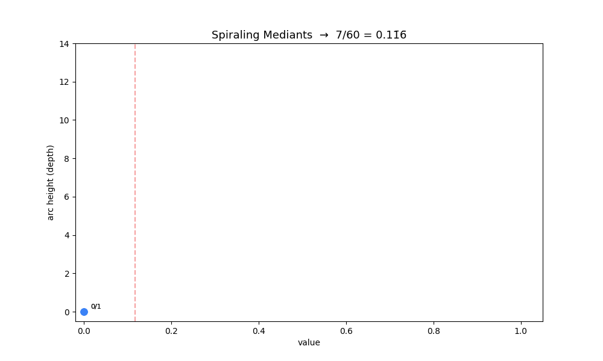
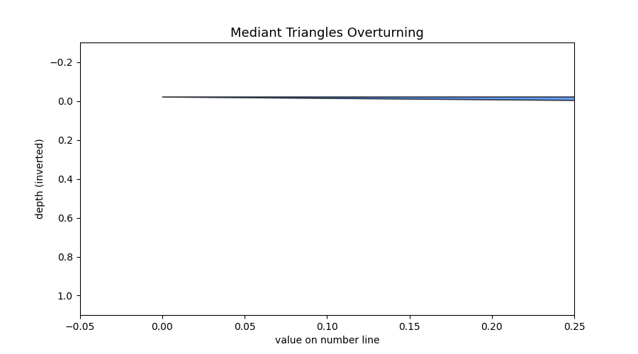

Stairs depth 1/13
Continued-fraction staircase at depth 1/13, budget 19. The configuration the headline ΩΛ = 13/19 prediction lives in.
The framework's substrate forming, depth by depth. The Stern-Brocot tree unfolds from the root rational 1/1 by repeated insertion of the mediant (a+c)/(b+d); each new generation is one more tongue at one more rational, colour-coded by its denominator. What looks like a graph is time — each step is one mediant, each gap a traversal between two locked frequencies.

The Stern-Brocot tree is the natural enumeration of every positive rational, generated by a single binary operation: the mediant (a+c)/(b+d) inserted between adjacent fractions a/b and c/d. Energy conservation forces the locked frequency between two bare frequencies to be the mediant; stability under coupling forces the smallest-denominator rational, which has the widest Arnold tongue, to be the unique stable lock. Iterating those two constraints builds the entire tree.
What this animation shows is that build, in time. At t = 0 the substrate is two starting fractions, 0/1 and 1/1, with nothing in between. By t = 1 the first mediant 1/2 has materialised. By t = 2 the two children of 1/2 — 1/3 and 2/3 — are in. Each subsequent depth adds 2^n new tongues, each tongue's width set by (K/2)^q at the rational p/q. The 1/φ gap at the centre is conspicuous: the golden-ratio winding sits between 3/5 and 2/3 and is the last rational the tree ever reaches.
Every dimensionless prediction the framework makes lives in this tree at some depth: ΩΛ = 13/19 at depth 6, ns ≈ 0.965 at the self-similarity point of the golden-ratio winding, αs/α2 = 27/8 at the bare K = 1 substrate scale. The animation above is the substrate inside which all of those numbers sit. The reader interested in which number lives at which depth can follow up at the README or the preprint view.

Continued-fraction staircase at depth 1/13, budget 19. The configuration the headline ΩΛ = 13/19 prediction lives in.

A Stern-Brocot walk traced in polar coordinates. Eight lefts, one right, one left, three rights — the walk lands on 7/60 as a rational on the unit circle.

Rational rose curve. A Lissajous figure at a rational frequency ratio — the geometric counterpart to the staircase plateau at the same rational.

Spiral evolution. The continuum-side companion to the discrete tree: the same substrate read at a different regime.

Farey triangles tiling the upper half plane under the SL(2,ℤ) action — the symmetry group that forces dim = 3 on the spatial manifold.